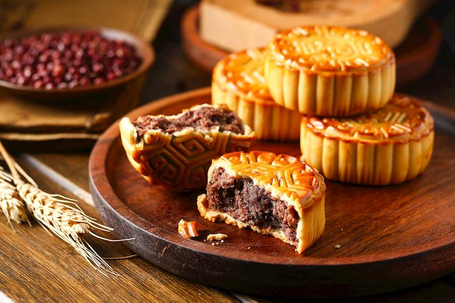

Wuren Mooncake

Traditional Cantonese mooncake filled with mixed nuts and dried fruits
Teochew Mooncake
A combination of soft yam paste with salted egg yolk with a flaky exterior
Salted Egg Yolk Mooncake

Inner filling contains salted egg yolks to represent the moon!
Red Bean Paste Mooncake

Inner filling with red bean paste
Minced Pork Mooncake
Filled with ground pork and has layered, flaky crust
Hokkien Mooncake

Decorated with a red stamp for good luck!
Snowskin Mooncake

Chewy mochi wrapped around sweet fillings
Fruits Mooncake

Flavored with different kinds of fruits
Green Tea Mooncake
A thin and delciate matcha dough encases fillings of your choice!